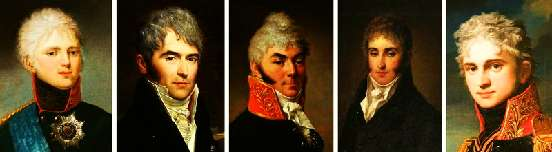

Борис Акунин
Мой календарь
Люблю императора Александра Первого. Под конец жизни, когда Сивку укатали крутые горки, он стал «властитель слабый и лукавый», а как чудесно начинал!
Это был юноша высокой души - все современники так пишут. Сашу воспитал швейцарец Лагарп, сеятель разумного-доброго-вечного, последователь великих французских просветителей. Юный наследник деспота и самодура Павла мечтал о свободе, равенстве и братстве. Больше всего ему хотелось отказаться от короны и уехать куда-нибудь в Америку, дабы мирно философствовать средь девственной природы, но долг требовал спасать свою несчастную, бедную, несвободную страну.
И вот 24-летний мечтатель взошел на престол. Первое, что сделал - собрал нескольких друзей, таких же идеалистов, и учредил Негласный Комитет, который они между собой называли «Комитетом общественного спасения». Это произошло 11 апреля 1801 года, в один из лучших дней российской истории.
Ну да, реформаторы витали в облаках. Время и испытания лишили царя и его молодых соратников иллюзий, им пришлось отказаться от первоначальных целей и принципов. Но души прекрасные порывы попусту не пропадают - особенно если эти ветры дуют в высших слоях атмосферы.
Почти все государственные начинания Негласного Комитета провалились, однако самого главного они все-таки добились. Потому что самое главное качество всякой страны - градус ЧСД, чувства собственного достоинства, присущий ее жителям. До Александра Первого у россиян оно было нулевое. Не лупят плетьми - и спасибочки большое, премного всем довольны-с. Но Комитет запретил подвергать дворян физическому унижению - и у одного из российских сословий немедленно возникло самоуважение. А из этой почвы произросло всё хорошее, что потом в России было: культура, свободолюбие, борьба с угнетением, Пушкин, Толстой и Чехов.
Всё начинается с прекрасных порывов души.